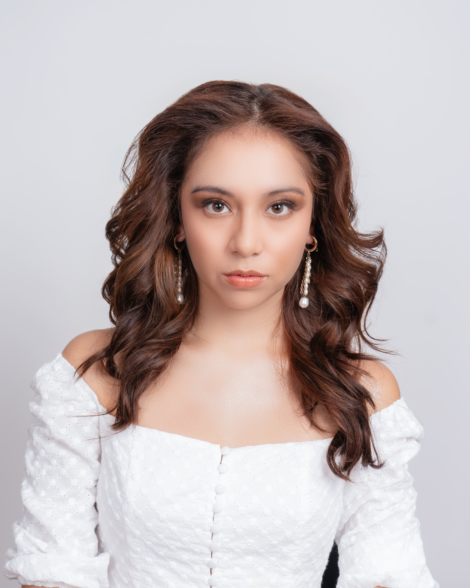

↓
Fotógrafo, filmmaker y diseñador gráfico radicado en Quito, Ecuador.
Especializado en retrato, fotografía comercial, producción audiovisual, contenido para redes sociales y comunicación visual para marcas, empresas y proyectos creativos.
